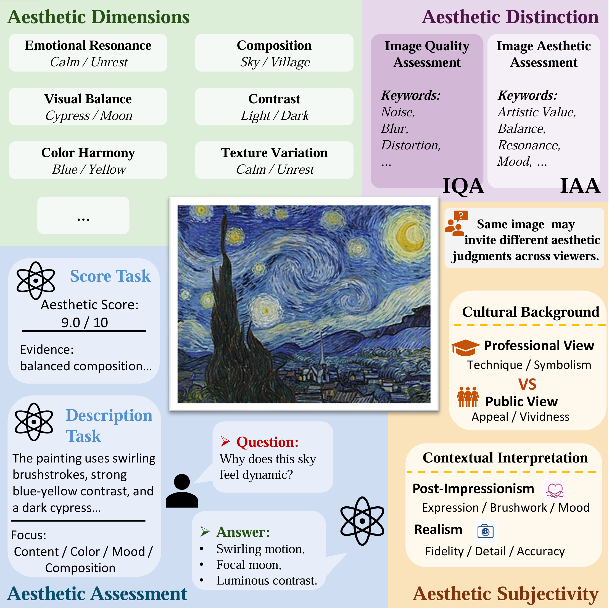
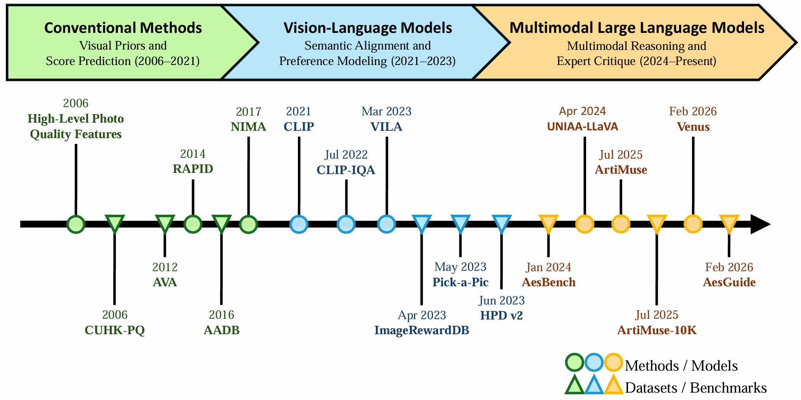
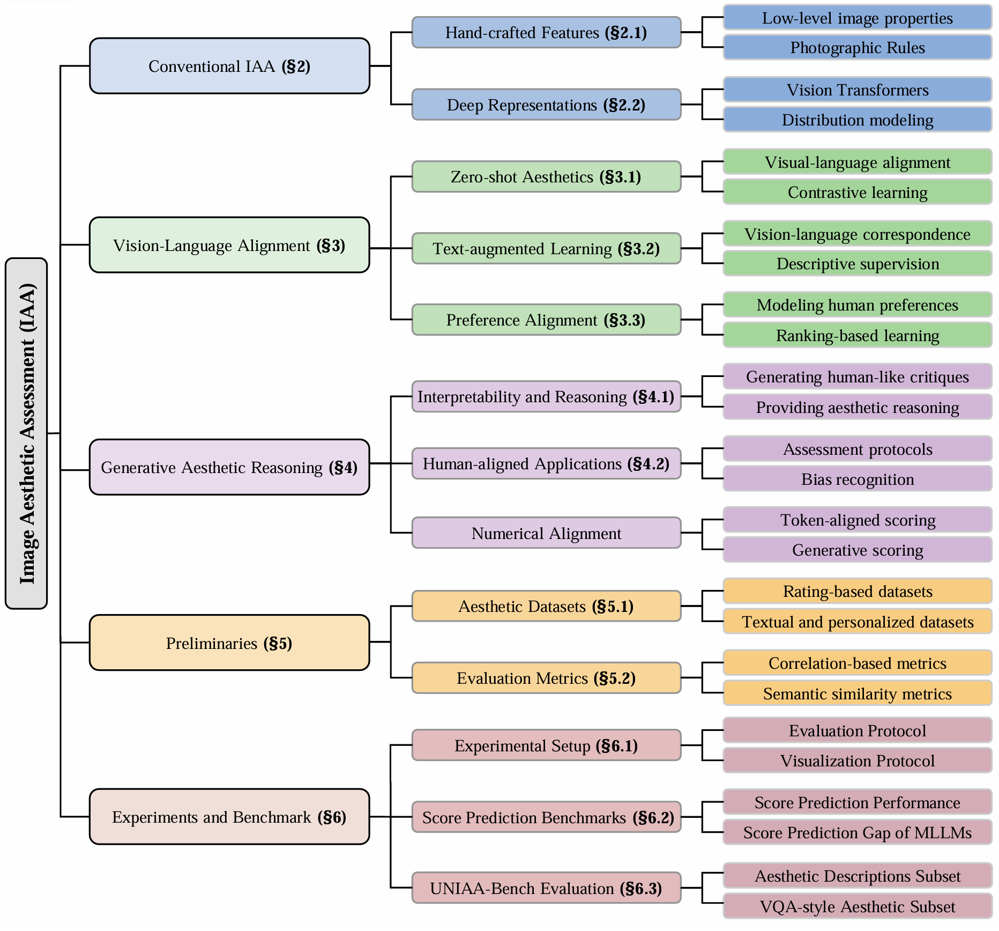
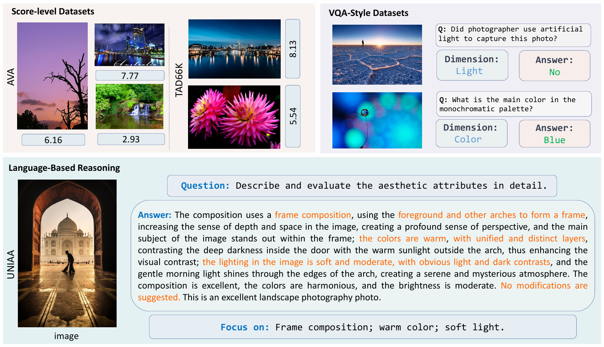
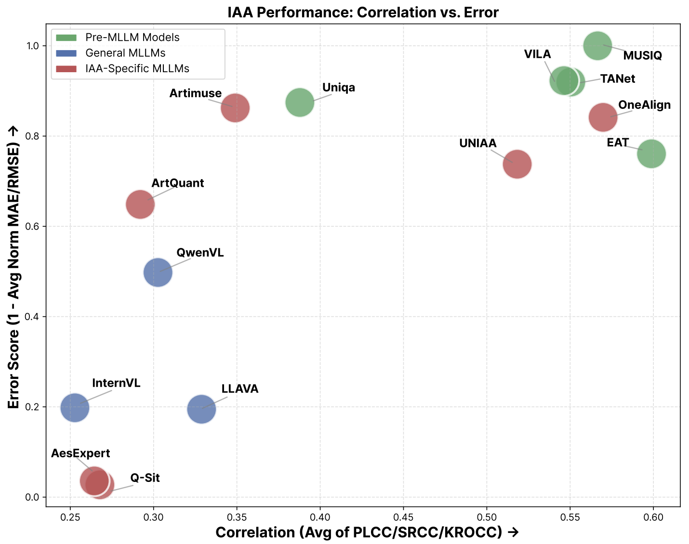
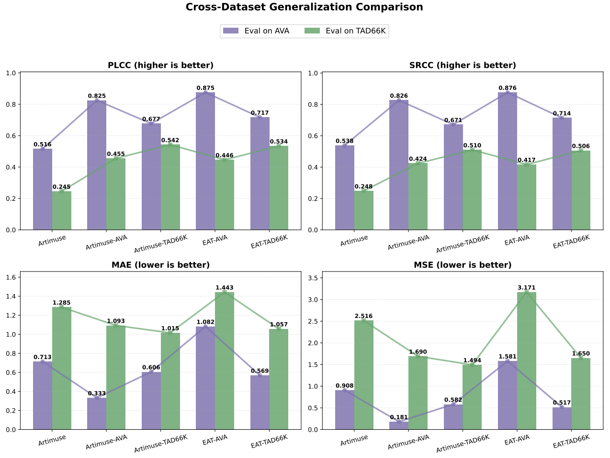
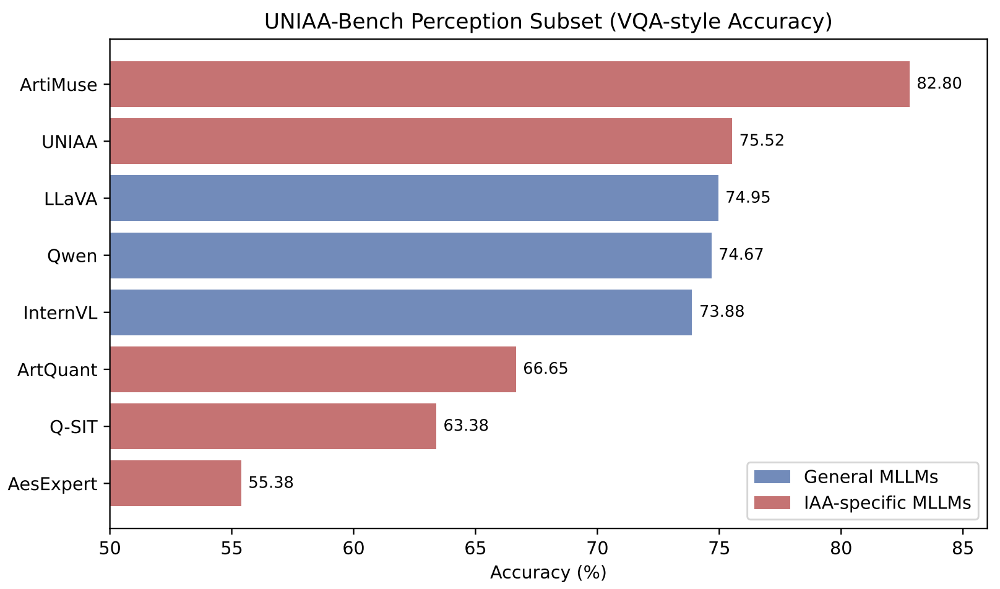

I
Task form
Score
Map visual features directly to a scalar human rating.
InputImageOutput7.8 / 10LimitationLittle explanation
Research paper · survey, taxonomy & unified benchmark
A systematic study of how Image Aesthetic Assessment evolves from scalar prediction to language-based, visually grounded aesthetic reasoning.
Illustrative output—not a benchmark result. A score says how much, not why.
The question behind the benchmark
Future IAA should connect reliable score prediction with visually grounded aesthetic reasoning, rather than treating scoring and explanation as separate outputs.
01 · Overview
IAA is broader than image quality. It spans composition, color, emotional resonance, subjectivity, scoring, description, and question answering.

02 · Evolution
The cards summarize what changed in the task itself. The paper timeline below shows when those changes happened and which methods and datasets carried them forward.
Task form
Map visual features directly to a scalar human rating.
Representation
Connect images with aesthetic language and preference signals.
Judgment
Generate attributes, answers, scores, and evidence-based critiques.
What changed is summarized above. When it changed—and the representative literature—is shown in the paper’s timeline.

03 · Taxonomy
The survey and benchmark share one structure: methods define the capabilities, datasets define the tasks, and evaluation reveals where each paradigm succeeds or fails.
Organizes IAA by the form of intelligence it supports.
Connects task definitions to measurable evidence.
Tests numerical prediction and language-based assessment together.

04 · Unified Benchmark
Three model families
Two complementary tracks

05 · Key Findings
The results resist a single leaderboard. Strong regression, useful explanation, and cross-dataset robustness are related—but not interchangeable.
On AVA, score-centric models remain substantially more consistent with human rankings than general MLLMs. Language fluency alone does not create a reliable regressor.
Qwen3-VL grows more aligned with human ordering from 2B to 30B, while absolute score errors fluctuate.
Fine-tuning on the evaluation dataset lifts correlation, but the advantage shrinks when AVA-trained models meet TAD66K—and vice versa.


06 · Reasoning Evaluation
Word overlap, semantic alignment, and perception accuracy each reveal a different slice of performance.
Does the wording overlap with a reference?
Useful for surface matchDoes the response preserve the intended meaning?
Better for paraphraseCan the model answer a focused aesthetic question?
Tests visual understandingIs the explanation tied to visible evidence?
Open evaluation challenge“Describe and evaluate the aesthetic attributes in detail.”
“A well-composed travel photograph of Budapest… The use of the camera is commendable, and the color and lighting are well-executed, with the arches framing the cityscape and creating a sense of depth.”
“A captivating view through a window, showcasing a prominent castle-like structure. The arched opening frames the scene, while the soft and muted palette evokes a serene atmosphere.”
“A grand, historic building framed by an archway, creating depth and perspective. The composition uses the arch to draw the viewer’s eye toward the central structure, while the muted palette supports a serene atmosphere.”
“The Hungarian Parliament Building is the focal point; its spires and domes are highlighted by soft overcast light. The arch creates a natural vignette effect, while the river adds a serene element to the composition.”
“The dark, arched opening acts as a natural vignette, drawing the eye directly to the Parliament Building. The arch and building symmetry create an almost classical composition; the muted gray-blue palette lends a somber, contemplative mood.”
What this comparison shows. The image and prompt are held constant, so the differences come from how each model constructs its critique. All five produce fluent aesthetic prose, but their specificity varies: generic praise such as “well-executed” says little about visual support, while stronger passages identify the arch, Parliament Building, symmetry, river, and muted palette, then connect those observations to focus, depth, balance, or mood. This supports the paper’s central evaluation claim: surface fluency or lexical overlap alone cannot establish aesthetic reasoning; useful evaluation must also test whether explanations are visually grounded and apply coherent aesthetic criteria.
ArtiMuse leads perception accuracy, yet several aesthetic-specific models trail general MLLMs. “Aesthetic-specific” is not a guarantee.

Design goal
Open resources
The repository provides pipelines for score prediction and language-based assessment, including inference scripts and offline metric computation.
Citation
The paper does not yet provide a finalized BibTeX entry. Please use the repository and paper metadata for now.